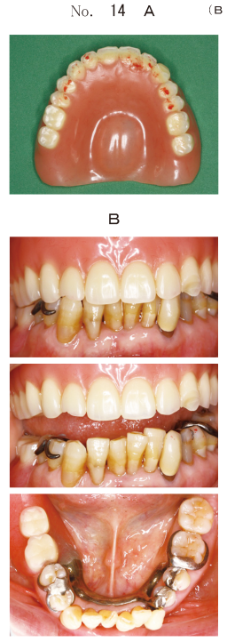
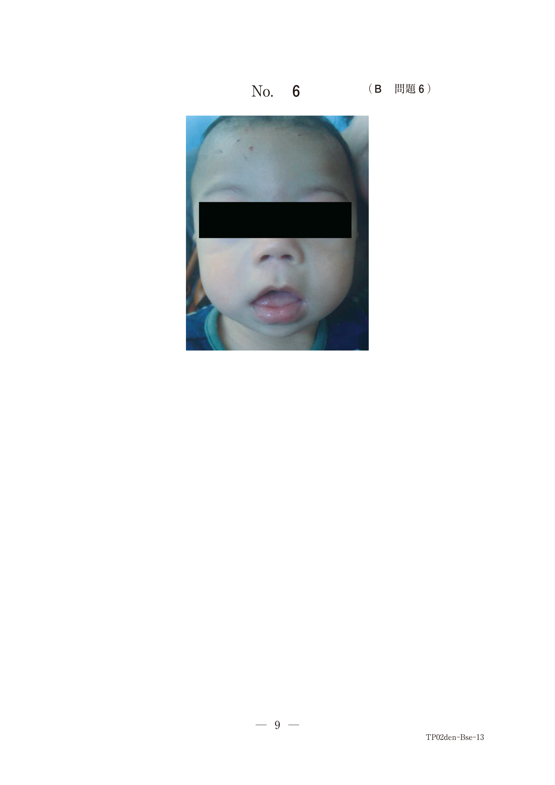
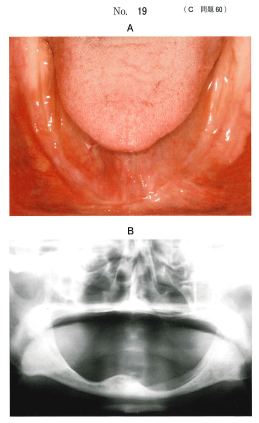

| 原因 | 対応 |
|---|---|
| 義歯床粘膜面の過圧 | 義歯床粘膜面の調整、リリーフ |
| 床縁の過長・不適合 | 床縁の調整 |
| オトガイ孔への圧迫 | 義歯床粘膜面のリリーフ、軟質裏装 |
| 咬合不調和 | 咬合調整、咬合面再形成 |
顎堤吸収が進行した下顎では、オトガイ孔が顎堤頂に近づく。義歯床がオトガイ孔を圧迫すると、下唇のしびれを生じる。
咬合高径の低下や人工歯の破折により咀嚼筋に負担がかかり、側頭筋の圧痛を生じることがある。対応は咬合面再形成。
側方運動時に義歯床研磨面が頬粘膜を圧迫すると頬部の痛みを生じる。検査には下顎の側方運動をさせる。
70歳の女性。咀嚼困難を主訴として来院した。上顎義歯は2年前に装着し良好に使用してきたが、1か月前から咀嚼時に両側側頭部に痛みが出現するという。前歯部人工歯切縁の破折と両側側頭筋の圧痛を認める。床下粘膜に異常は認めない。咬合接触状態を印記した義歯の写真（別冊No.14A）と口腔内写真（別冊No.14B）とを別に示す。
咀嚼に関する指導とともに行うべき適切な対応はどれか。1つ選べ。

【解説】前歯部人工歯の破折と側頭筋の圧痛から、咬合高径の低下が疑われる。咬合面再形成を行う。
78歳の女性。左側頰部の痛みを主訴として来院した。全部床義歯を装着して食事をすると左側頰部が痛いという。検査結果の写真（別冊No.13）を別に示す。
丸印で囲んだ領域の検査をするために行わせた運動はどれか。1つ選べ。

【解説】頬部の痛みを検査するには下顎の側方運動をさせる。側方運動時の床研磨面と頬粘膜の接触を確認する。
78歳の男性。咀嚼時に左側下唇がしびれることを主訴として来院した。7年前に現在の義歯を装着し問題なく使用していたが、半年前から食事開始数分後にしびれるようになったという。初診時の口腔内写真（別冊No.19A）とエックス線画像（別冊No.19B）を別に示す。
まず行うべき処置はどれか。2つ選べ。

【解説】下唇のしびれはオトガイ孔への圧迫が原因。義歯床粘膜面のリリーフと軟質裏装で対応する。